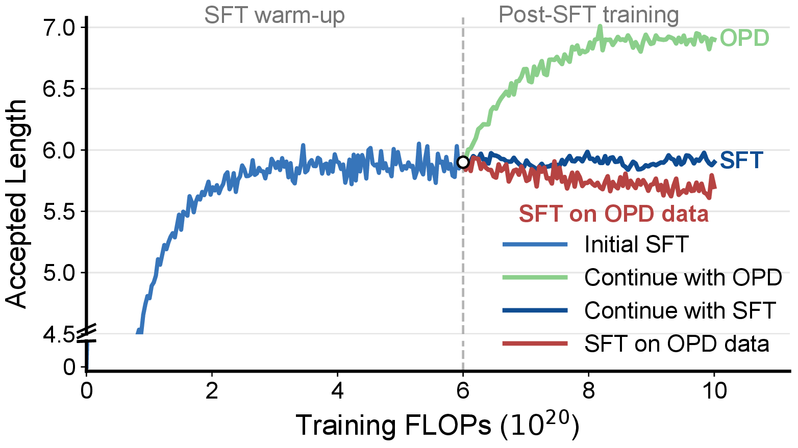
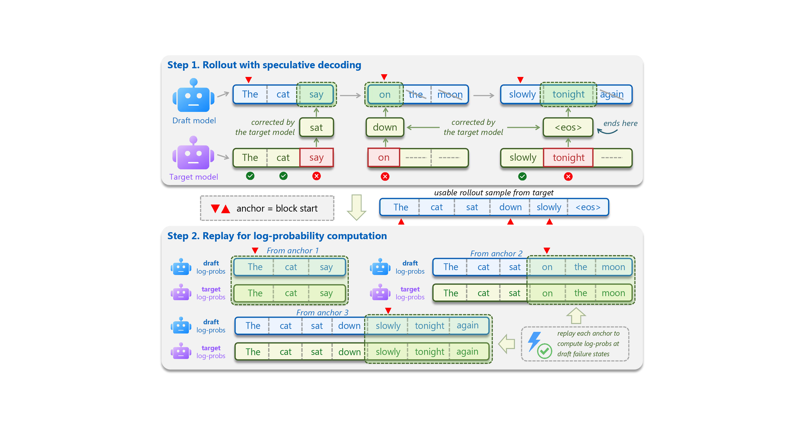

Target-Assisted Rollout
Speculative decoding collects high-quality continuations while preserving where draft blocks begin.
On-Policy Distillation for Speculative Draft Models
Draft-OPD post-trains speculative draft models on the states they actually induce during verification. By replaying draft errors from target-assisted rollouts, it improves lossless decoding speed for thinking models while preserving the target model distribution.
Overview
Speculative decoding accelerates large language model inference by asking a lightweight draft model to propose token blocks that a larger target model verifies in parallel. The closer the draft model matches the target, the longer the accepted span and the fewer expensive target-model steps are needed.
Existing draft models are usually trained with supervised fine-tuning on fixed target-generated trajectories. Draft-OPD identifies the resulting offline-to-inference mismatch: the drafter is trained on target prefixes, but at inference time its acceptance length is determined by blocks produced under its own policy. Continuing offline SFT therefore quickly reaches a plateau.

Method
Direct on-policy distillation is difficult for speculative draft modules because they are not designed to roll out full sequences independently. Target-assisted rollout produces stable continuations, but standard verification discards rejected proposals, precisely the tokens that reveal where the draft model fails.
Draft-OPD keeps the stable target-assisted rollout and records the start position of each drafted block. It then replays drafting from these anchors so the target model can score both accepted and rejected draft tokens on the same draft-generated prefixes.
Speculative decoding collects high-quality continuations while preserving where draft blocks begin.
Drafting is replayed from verification anchors so rejected proposals remain visible to training.
Accepted tokens reinforce agreement, while rejected tokens focus learning on draft-induced errors.

Results
Draft-OPD improves decoding speed and average acceptance length under matched training FLOPs. With thinking mode enabled at temperature 0, it achieves 4.88× average speedup across seven benchmarks, improving over EAGLE-3 and DFlash by 23% and 13%.
| Model | Method | GSM8K | MATH-500 | AIME25 | MBPP | HumanEval | SWE-Lite | MT-Bench | Mean Speedup | Mean τ |
|---|---|---|---|---|---|---|---|---|---|---|
| Thinking Mode Enabled | ||||||||||
| Temperature = 0 | ||||||||||
| Q3-4B | EAGLE-3 | 4.41× | 4.15× | 3.30× | 4.29× | 4.38× | 3.47× | 3.07× | 3.87× | 5.33 |
| DFlash | 4.51× | 4.88× | 4.69× | 4.39× | 4.77× | 4.12× | 2.96× | 4.33× | 5.51 | |
| Draft-OPD | 5.31× | 5.55× | 5.28× | 4.85× | 5.17× | 4.66× | 3.18× | 4.86× | 5.96 | |
| Q3-8B | EAGLE-3 | 4.58× | 4.45× | 4.01× | 4.55× | 4.46× | 3.38× | 3.02× | 4.06× | 5.64 |
| DFlash | 4.67× | 5.01× | 4.77× | 4.50× | 4.71× | 3.72× | 3.01× | 4.34× | 5.19 | |
| Draft-OPD | 5.36× | 5.80× | 5.51× | 4.86× | 5.19× | 4.31× | 3.18× | 4.89× | 5.73 | |
| Temperature = 0.6 | ||||||||||
| Q3-4B | EAGLE-3 | 3.90× | 3.77× | 3.07× | 3.75× | 3.77× | 2.75× | 2.77× | 3.40× | 5.03 |
| DFlash | 4.21× | 4.46× | 4.25× | 3.92× | 4.17× | 3.17× | 2.73× | 3.84× | 4.77 | |
| Draft-OPD | 4.73× | 4.91× | 4.56× | 4.21× | 4.40× | 3.38× | 2.87× | 4.15× | 5.13 | |
| Q3-8B | EAGLE-3 | 4.13× | 4.09× | 3.57× | 3.93× | 3.95× | 2.83× | 2.83× | 3.62× | 5.33 |
| DFlash | 4.23× | 4.57× | 4.34× | 3.85× | 4.12× | 2.88× | 2.76× | 3.82× | 4.66 | |
| Draft-OPD | 4.77× | 5.07× | 4.80× | 4.17× | 4.47× | 3.13× | 2.91× | 4.19× | 5.05 | |
| Thinking Mode Disabled | ||||||||||
| Temperature = 0 | ||||||||||
| Q3-4B | EAGLE-3 | 4.58× | 5.70× | 5.39× | 4.55× | 4.53× | 2.54× | 2.80× | 4.30× | 5.84 |
| DFlash | 5.36× | 6.35× | 5.93× | 5.00× | 5.19× | 3.05× | 3.01× | 4.84× | 6.04 | |
| Draft-OPD | 6.22× | 7.22× | 6.39× | 5.40× | 5.65× | 3.18× | 3.09× | 5.31× | 6.60 | |
| Q3-8B | EAGLE-3 | 4.99× | 6.07× | 5.87× | 4.83× | 4.94× | 2.67× | 3.06× | 4.63× | 5.99 |
| DFlash | 5.69× | 6.81× | 6.40× | 5.17× | 5.64× | 3.17× | 2.92× | 5.11× | 6.04 | |
| Draft-OPD | 6.49× | 7.64× | 6.99× | 5.64× | 6.02× | 3.33× | 3.12× | 5.60× | 6.57 | |
| Temperature = 0.6 | ||||||||||
| Q3-4B | EAGLE-3 | 4.16× | 4.93× | 4.49× | 3.98× | 4.02× | 2.41× | 2.50× | 3.78× | 5.66 |
| DFlash | 5.04× | 5.87× | 4.99× | 4.72× | 5.17× | 2.77× | 2.80× | 4.48× | 5.73 | |
| Draft-OPD | 5.84× | 6.35× | 5.31× | 4.98× | 5.42× | 2.90× | 2.86× | 4.81× | 6.13 | |
| Q3-8B | EAGLE-3 | 4.61× | 5.17× | 4.85× | 4.40× | 4.29× | 2.43× | 2.70× | 4.06× | 5.69 |
| DFlash | 5.26× | 6.18× | 5.19× | 4.74× | 4.97× | 2.85× | 2.81× | 4.57× | 5.62 | |
| Draft-OPD | 6.01× | 6.61× | 5.57× | 5.17× | 5.30× | 3.03× | 2.97× | 4.95× | 6.02 | |
Decoding speedup ratio and average acceptance length (τ) on Qwen3 models. Thinking mode uses a maximum of 8192 generated tokens; non-thinking mode uses a maximum of 2048 generated tokens.
| Model | Task | Method | 1 | 4 | 8 | 16 | 32 | Avg. τ |
|---|---|---|---|---|---|---|---|---|
| Qwen3-4B (Enable Thinking) | ||||||||
| Qwen3-4B | AIME25 | DFlash | 912 | 2755 | 4750 | 6841 | 8410 | 6.06 |
| Draft-OPD | 969+6% | 2984+8% | 5071+7% | 7297+7% | 9043+8% | 6.59 | ||
| MATH-500 | DFlash | 949 | 3157 | 5234 | 8004 | 10062 | 6.17 | |
| Draft-OPD | 1036+9% | 3413+8% | 5603+7% | 8593+7% | 10943+9% | 6.68 | ||
| SWE-Lite | DFlash | 901 | 2983 | 5009 | 7743 | 9604 | 5.62 | |
| Draft-OPD | 976+8% | 3230+8% | 5544+11% | 8568+11% | 10538+10% | 6.12 | ||
| Qwen3-8B (Enable Thinking) | ||||||||
| Qwen3-8B | AIME25 | DFlash | 662 | 2121 | 3612 | 4956 | 5985 | 5.67 |
| Draft-OPD | 741+12% | 2465+16% | 4127+14% | 5729+16% | 6645+11% | 6.42 | ||
| MATH-500 | DFlash | 703 | 2374 | 4154 | 5958 | 6991 | 5.99 | |
| Draft-OPD | 787+12% | 2721+14% | 4691+13% | 6666+12% | 7940+13% | 6.64 | ||
| SWE-Lite | DFlash | 592 | 1962 | 3347 | 5051 | 6113 | 4.60 | |
| Draft-OPD | 644+9% | 2263+15% | 3879+15% | 5611+11% | 6904+13% | 5.27 | ||
| Qwen3-30B-A3B-Thinking-2507 | ||||||||
| Qwen3-30B-A3B | AIME25 | DFlash | 421 | 1086 | 1858 | 2738 | 4014 | 4.54 |
| Draft-OPD | 476+13% | 1229+13% | 2111+13% | 3187+16% | 4718+17% | 5.32 | ||
| MATH-500 | DFlash | 417 | 1176 | 2009 | 3020 | 4462 | 5.44 | |
| Draft-OPD | 477+14% | 1303+11% | 2243+11% | 3405+12% | 5007+12% | 5.95 | ||
| SWE-Lite | DFlash | 319 | 855 | 1484 | 2337 | 3453 | 3.43 | |
| Draft-OPD | 352+10% | 960+11% | 1628+9% | 2579+10% | 3850+11% | 3.81 | ||
Throughput in tokens per second on SGLang with concurrency levels from 1 to 32. Draft-OPD consistently improves serving throughput over DFlash, with gains up to 17%.
Resources